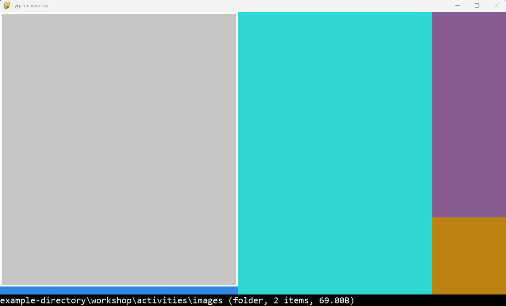

Sean McLeod's Portfolio
Summary
I am a 2nd year student at the University of Toronto Mississauga majoring in Computer Science and minoring in Statistics and Business.
Always seeking for oppurtunities to learn more and face challenges.
Education
- Honours Bachelor of Science, Computer Science and Statistics/Business + PEY Co-op (CGPA: 3.71/4.00)
- University of Toronto Mississauga (2022 - 2027)
- John Pounder Award for Astronomy - Award in recognition of achieving the highest grade in AST101 (Solar System and Galaxies).
Work Experience
Coder Sports - Programming Assistant (Co-op)
- Led a Hackathon for 80+ students by developing programming problems in Python with formal documentations, resulting in vast development in students' programming skills.
- Worked 40 hours weekly, working within teams to consult events for Coder Sports students.
- Created and managed official reports for Coder Sports with formality, resulting in over 30 pages of official documents for Coder Sports to refer to.
The Ottawa Korean School - Teaching Assistant
- Worked with instructors to create curriculum ideas and materials, which provided educational learning for students.
- Worked as a translator for an event hosting over 20 principals from Korea, facilitating their understanding of the Ontario school system.
Skills
- Programming Languages: Python, Java, HTML, CSS, JavaScript, SQL, Kotlin, C
- Project Management: Agile methodologies, scrum process, UML Diagrams
- Software Development: version control, object-oriented programming, design patterns, debugging
- Professional Skills: effective communication, problem solving, self-motivation, teamwork, growth mindset
Projects
Prison Escape
- Utilized Python to create a game consisting of 3 stages.
- Main takeaways: Sprites, animation, collision detenction, OOP, searching for resources
Tree Map Visualizer
- Utilized Python, Object Oriented Design, and algorithms in a test-driven development process to create a treemap that visualizes files and folders according to their size.
- Functions: expand/collapse folder, change the size of a file, move/delete/duplicate/copy/paste a file or a directory.
- Main takeaways: unit tests, OOP, data structure

Huffman Coding Compression/Decompression Program
- Utilized Python, unit tests, and Huffman coding algorithm to create a program that compresses/decompresses a given file.
- Main takeaways: code-reading skills, recursion, logical reasoning, problem solving
GUI Calculator
- Utilized Java, Object Oriented Design, Abstract Syntax Tree, and agile methodologies in a test-driven development process to create a calculator with a GUI.
- Main takeaways: teamwork, documentation, software design process (user storis, UML diagrams, scrum process, etc), problem solving